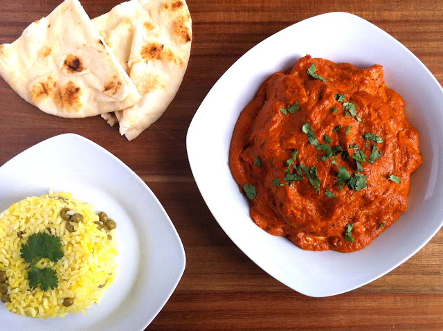

Chicken Tikka Masala

The national dish of the United Kingdom
Country of Origin : India/UK
This Indian dish has evolved into one of the most popular curries in history.
Ingredients List
- 2 chicken breasts, cubed
- 1 cup yogurt
- 1 tbsp fresh lemon juice
- 2 tsp cumin
- 1 tsp black pepper
- 2 tsp ginger, minced
- 1 tsp cayenne
- 1 clove garlic
- 2 tbsp olive oil
- 1 small yellow onion, chopped fine
- ½ jalapeno, seeded and chopped fine
- ½ tsp ginger, minced
- 2 cloves garlic
- ½ tsp cardamom, ground
- 1/8 tsp clove, ground
- 1/8 tsp cinnamon, ground
- ½ tsp cumin
- ½ tsp coriander, ground
- ½ tsp chili powder
- ¼ tsp tumeric
- ¼ tsp black pepper
- 2 tbsp tomato paste
- 14 oz crushed tomato
- 1 tbsp sugar
- 2 tbsp yogurt
- 6 tbsp of cream
- 1 bunch of cilantro, for garnish
Directions
- Mix the first set of ingredients with the chicken as a marinade. Let sit at least 1 hour. If Marinating over night, omit lemon juice until the final hour.
- Cook chicken on a grill pan in the oven or on a bbq until cooked through.
- In a large sauce pan on low add 2 tbsp oil, onion, jalapeno, garlic, and ginger. Saute until soft.
- Add above spices, sugar, and &frac18 tsp of both cinnamon and cloves. Fold in tomato paste and cook for 2 minutes.
- Add crushed tomatoes, bring to simmer, then remove and blend it all together.
- Again bring to a low simmer, adding 2 tbsp of yogurt.
- Last, add chick and 6 tbsp of cream, stir and serve over rice or with naan.
- Garnish with cilantro on top.
Notes
To add pep to your rice, throw in some cardamom seeds or saffron to your rice cooker for added effect. Also, a ¼ tsp turmeric will give the rice a nice yellow color and subtle flavor